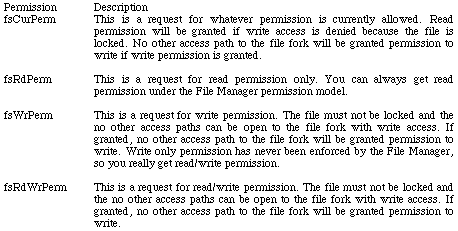
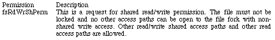
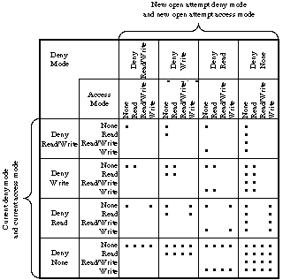
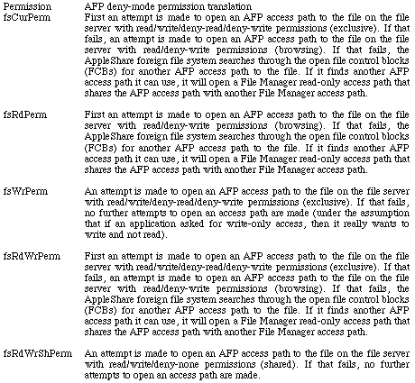
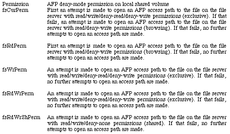
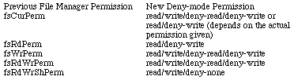
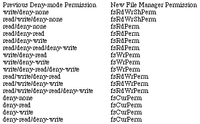

|
|
This note gives an in-depth explanation of the File Manager and AFP permission
models used by the File Manager to open files. It also tells how a File Sharing
or AppleShare file server implements the AFP permission model on the server
Macintosh.
[Apr 01 199]
|
Permission Models
First there were the original four File Manager open permissions:
whatever permission is currently allowed, read only permission, write only permission,
and exclusive read/write permission. Shared read/write permission was added with the HFS
version of the File Manager. AppleShare introduced AppleTalk Filing Protocol (AFP)
deny-mode permissions and the translation of standard File Manager permissions to
AFP deny-mode permissions. System 7 added one more piece to our permissions pie;
local File Sharing and AppleShare permissions. There are also several foreign file
systems which use other permission models. This note gives an explanation of each
permission model and gives some code that may make your application more robust.
The original four File Manager permissions are simple to understand and simple
to use. The four permissions available under this model are:

Table 1a. The Original Four Permissions
Using the original permission set, the File Manager gives only one access path
to a file fork the permission to write. The File Manager decides whether
permission to write will be granted based on what permissions other already
open access paths may have and the current lock state of the file. The File
Manager does not deny new read access paths to a file fork.
When the hierarchical version of the File Manager was introduced, shared
read/write permission was added to the original four permissions. This permission
allows multiple access paths to be opened for both reading and writing to a file fork.

Table 1b. Shared Read/Write Permission
As noted in Inside Macintosh: Files on page 2-8, "Shared read/write
permission allows multiple access paths for writing and reading. It is safe to
have multiple read/write paths open to a file only if there is some way of
locking a portion of the file before writing to that portion of the file." The
PBLockRange and PBUnlockRange functions provide the mechanism to lock a portion
of a file. However, range locking is usually provided only by foreign file
systems where shared file access is fully supported. See Inside Macintosh:
Files, Inside AppleTalk, and Technical Note FL 26 - Lock, Unlock the Range,
for more information on range locking and a method for determining whether
PBLockRange and PBUnlockRange are supported on a particular file.
To summarize, with the original File Manager permission model you can
always get an access path with read permission to a file. The File
Manager will only deny write permission if the file is locked or if another
access path to the file already has permission to write. Shared read/write
permission allows multiple read and write access paths to a file, but should
not be used unless range locking is available. Access to a file can be reduced
to the following table.
|
Current File Access State
file is locked; other access paths
to file may or may not be open
file is not locked; no other access paths are open
file is not locked and all other open access paths
are read only access
file is not locked and another open access path has write access
file is not locked and other open access paths are read/write shared access
|
Permission Requested
fsCurPerm
fsRdPerm
fsWrPerm
fsRdWrPerm
fsRdWrShPerm
fsCurPerm
fsRdPerm
fsWrPerm
fsRdWrPerm
fsRdWrShPerm
fsCurPerm
fsRdPerm
fsWrPerm
fsRdWrPerm
fsRdWrShPerm
fsCurPerm
fsRdPerm
fsWrPerm
fsRdWrPerm
fsRdWrShPerm
fsCurPerm
fsRdPerm
fsWrPerm
fsRdWrPerm
fsRdWrShPerm
|
Permission Granted
read
read
none (permErr)
none (permErr)
none (permErr)
read/write
read
read/write
read/write
read/write/shared
read/write
read
read/write
read/write
read/write/shared
none (opWrErr)
read
none (opWrErr)
none (opWrErr)
none (opWrErr)
none (opWrErr)
read
none (opWrErr)
none (opWrErr)
read/write/shared
|
Table 2. File Manager Synchronization Rules
An open with write permission request (fsCurPerm, fsWrPerm, fsRdWrPerm, or
fsRdWrShPerm) does not fail on a locked volume and the write bit in ioFCBFlags
returned by PBGetFCBInfo will be set indicating that data can be written to the
file. As noted in Inside Macintosh: Files on page 2-8, you won't discover
this until you receive an error (either vLckdErr or wPrErr) on the first call
that attempts to write to the file or change the file's logical or physical
end-of-file. You can preflight for this condition by calling PBHGetVInfo and
checking the hardware and software locked bits in ioVAtrb.
|
Warning:
Even though the Open calls return the ioRefNum of an existing
access path when the call fails with opWrErr, that ioRefNum should never
be used unless your application owns that particular access path to the file. If another
application or process owns that particular access path to the file, it could close it at
any time and then if the File Control Block (FCB) is reused due to another file being
opened, you could be accessing the wrong file! Even if you own the original
access path, you should be very careful, because calls you make to the file
could change the file's mark (which will be shared).
|
The permission model used by AppleTalk Filing Protocol (AFP) is designed to work i
n an environment where several different users could share access to a file concurrently.
An application opening a file on an AFP file server or a file system that supports AFP's
permission model can specify an access mode (read, write, read/write, or none) and a deny
mode (deny-read, deny-write, deny-read/write, or deny-none). The synchronization rules
using AFP's permission model can be summarized in the following table (borrowed from
the File sharing modes section in chapter 13 of Inside AppleTalk). A dot indicates
a new open call has succeeded; otherwise, it has failed.

Figure 1. AFP Synchronization Rules
Note that in addition to the synchronization rules listed above, an attempt to
open a file on an AFP volume can fail if write access is requested and the file
is "locked" (the AFP WriteInhibit file attribute is set for the file).
Volumes that support AFP deny-mode permissions and thus, the PBHOpenDeny and
PBHOpenRFDeny functions, can be identified by checking the bHasOpenDeny bit
returned in the vMAttrib field by PBHGetVolParms. You should use the
PBHOpenDeny and PBHOpenRFDeny functions if you really want to ensure the access
permission and deny-mode permission you request is what you get. PBHOpenDeny
and PBHOpenRFDeny are not retried in any way. If the file cannot be opened
because of a deny conflict, the error afpDenyConflict is returned and ioRefNum
is set to zero.
If you don't want to special case volumes that support AFP deny-mode
permissions, you can use the File Manager permissions described in the previous
section of this Note. The next section of this Note describes how File Manager
permissions are translated to AFP deny-mode permissions.
AppleShare (and other AFP file servers) use the AppleTalk Filing Protocol (AFP)
deny-mode permissions exclusively. So that applications using classic File
Manager permissions will work, the foreign file system used by AppleShare (on
each workstation) translates classic File Manager permissions into the AFP
deny-mode permissions.
To keep applications from damaging each other's files, the basic rule of file
access (in translating permissions for AppleShare volumes) was changed to "single writer
OR multiple readers, but not both." Because of this change, two applications cannot both
have access to the same file unless both are read only; this eliminates the danger of
reading from a file when it is inconsistent.
|
Note:
This change in the basic rule currently applies only to AppleShare volumes.
Should a future version of the File Manager incorporate this change for local volumes,
then an application expecting to get more than one path to a file (with at least one
read/write) will fail.
|
The AppleShare foreign file system is used to access volumes on AppleShare and
other AFP file servers. Files opened by a workstation must access the file on
the AppleShare volume through an AFP access path maintained by the foreign file
system. In some situations (as you'll see later), the AFP access path from a
single workstation to the server may be shared by two or more open File Manager
access paths on that workstation. In those cases, the File Manager will only
allow one of the File Manager access paths write permission. A File Manager
access path is an access path between an application and a file on either a
local HFS volume or on a volume accessed by an foreign file system.
The following table shows how the classic permissions described in the File
Manager are translated into the AFP deny-mode permissions.

Table 3. Translation of File Manager Permissions to AFP deny-mode Permissions
on a Remote Volume
fsRdPerm acts as you would expect: browsing access is achieved if there is no
existing write access path to the file.
For fsCurPerm, you also get what you'd expect: "whatever is available" has
always meant "read/write if you can, otherwise, read only". The deny portions
of the translation are important for enforcing the updated basic rule of file
access: if there's an existing read or write access path to a file being opened
with fsCurPerm, the first set of permissions will fail; the second set,
browsing access, will then succeed only if there is no existing write access
path to the file.
fsRdWrPerm is also retried as read-only, to simulate the case where a file is
being opened from a locked disk. Elsewhere, it's pointed out that fsRdWrPerm is
granted even if the volume is locked, and that an error won't be returned until
a PBWrite (or PBSetEOF or PBAllocate) call is made. The same is now true for a
read-only folder on an AppleShare volume.
|
Note:
Changing access privileges of a folder does not change the access
established for an open path to a file in that folder. This is unlike the case
where you eject a disk, remove the hardware lock, and can then write to an open
file on it.
|
When the System 7 File Sharing or AppleShare file server is on, shared volumes
on your Macintosh can be accessed by both the local user and remote users. So,
what permission model is used? File Manager or AFP deny-mode permissions? The
answer is both!
To a remote user, your system looks like any other AFP file server on the
network. When a remote user opens a file on your system, they are always
opening the file using AFP deny-mode permissions. However, the local user is
running in a hybrid environment and can use either the File Manager permission
model or the AFP deny-mode permission model.
When a local user opens a file using the File Manager permission model,
everything works just like it does when file sharing is off, unless the file is
already open using deny-mode permissions. Deny-mode permissions take precedence
over File Manager permissions.
When File Sharing is on and a new local open call is made using File Manager
permissions, the call is made and deny-mode permissions are added for
synchronizing with remote users. If no remote users have the file open, then
the call acts just as it would without File Sharing. If a remote user has the
file open, then the deny-mode permissions are used. (Note: afpAccessDenied is
returned instead of permErr when a file is locked and File Sharing is on.)
Here's the translation used when a remote user has the file open and
deny-permissions must be respected:

Table 4. Translation of File Manager Permissions to AFP deny-mode Permissions on a Local Shared Volume
when a Remote User has the File Open
One task the File Sharing extension performs when a user turns File Sharing on
is assign deny-mode permissions to all open files. The following table shows
how the deny-mode permissions are assigned to open files.

Table 5. File Manager to Deny-mode Permission Translation
What happens when a user turns File Sharing off? Things revert to the File
Manager permissions. However, there's the slight problem of translating the
sixteen AFP permissions to the five File Manager permissions. Here's another
table that shows what happens when you turn File Sharing off.

Table 6. Deny-mode to File Manager Permission Translation
Foreign file systems that access non-Macintosh systems probably do not use
the File Manager or AFP permission models on the host system. However, those
foreign file systems must still map their permission model to one of the two
permission models supported by the File Manager. An application should use the
PBGetForeignPrivs and PBSetForeignPrivs functions provided by the System 7 File
Manager if it needs to directly manipulate the permissions of a non-Macintosh
permission model. See Inside Macintosh: Files and contact the publisher
of the foreign file system for more information.
That's a good question (at least I thought it was when I asked myself). You
know what permissions you'll get if the volume the file is on supports AFP
deny-mode permissions and you used PBHOpenDeny or PBHOpenRFDeny. The chances
of getting what you ask for are somewhat slimmer if you use File Manager
permissions to open a file. There two ways to deal with this problem.
The first method is to try with the permissions you want and if that fails,
keep retrying asking for fewer permissions until you succeed (or decide to give
up). The idea here is you know what permissions you want before you open a file
and if you don't get it, you get to decide what to try next. The
OpenAware routines in the Developer Technical Support MoreFiles sample code can
be used for that purpose because it attempts to give you the AFP deny-mode
permissions you request and if it cannot, it tries to give you the equivalent
File Manager permissions.
The OpenAware routines let you deal with one permission model, the more
complete deny-mode permission model. The following constants can be used to
specify deny-mode permissions.
/*
** Deny mode permissions for use with the HOpenAware, HOpenRFAware,
** FSpOpenAware, and FSpOpenRFAware functions.
*/
enum
{
dmNone = 0x0000,
dmNoneDenyRd = 0x0010,
dmNoneDenyWr = 0x0020,
dmNoneDenyRdWr = 0x0030,
dmRd = 0x0001, /* Single writer, multiple readers; the readers
*/
dmRdDenyRd = 0x0011,
dmRdDenyWr = 0x0021, /* Browsing - equivalent to fsRdPerm */
dmRdDenyRdWr = 0x0031,
dmWr = 0x0002,
dmWrDenyRd = 0x0012,
dmWrDenyWr = 0x0022,
dmWrDenyRdWr = 0x0032,
dmRdWr = 0x0003, /* Shared access - equivalent to fsRdWrShPerm */
dmRdWrDenyRd = 0x0013,
dmRdWrDenyWr = 0x0023, /* Single writer, multiple readers; the writer
*/
dmRdWrDenyRdWr = 0x0033 /* Exclusive access - equivalent to fsRdWrPerm
*/
};
|
Here is a self-contained version of the HOpenAware function (it makes no calls
to other functions in the MoreFiles library).
/*
** A self-contained version of HOpenAware. See MoreFiles for the real thing.
*/
pascal OSErr HOpenAware(short vRefNum,
long dirID,
ConstStr255Param fileName,
short denyModes,
short *refNum)
{
HParamBlockRec pb;
OSErr result;
GetVolParmsInfoBuffer volParmsInfo;
*refNum = 0; /* default */
/* Get volume attributes */
/* This preflighting is needed because Foreign File Access based file systems
*/
/* don't return the correct error result to the OpenDeny call */
pb.ioParam.ioNamePtr = (StringPtr)fileName; /* might be a full pathname */
pb.ioParam.ioVRefNum = vRefNum;
pb.ioParam.ioBuffer = (Ptr)&volParmsInfo;
pb.ioParam.ioReqCount = sizeof(GetVolParmsInfoBuffer);
result = PBHGetVolParmsSync(&pb);
if ( (result == noErr) || (result == paramErr) )
{
/* paramErr is OK, it just means this volume doesn't support GetVolParms
*/
if ( (result == noErr) &&
((volParmsInfo.vMAttrib & (1L << bHasOpenDeny)) != 0) )
{
/* OpenDeny is supported, so use it */
pb.ioParam.ioMisc = NULL;
pb.fileParam.ioFVersNum = 0;
pb.fileParam.ioNamePtr = (StringPtr)fileName;
pb.fileParam.ioVRefNum = vRefNum;
pb.fileParam.ioDirID = dirID;
pb.accessParam.ioDenyModes = denyModes;
result = PBHOpenDenySync(&pb);
*refNum = pb.ioParam.ioRefNum;
}
else
{
/* OpenDeny isn't supported, so try File Manager Open functions */
result = noErr; /* result back to noErr */
if ( (denyModes & dmWr) != 0 )
{
/* If request includes write permission, then see if the volume
*/
/* is locked by hardware or software. The HFS file system doesn't
*/
/* check for this when a file is opened - you only find out later
*/
/* when you try to write and the write fails with a wPrErr */
/* or a vLckdErr. */
Str255 tempPathname;
pb.volumeParam.ioVRefNum = vRefNum;
/* Make a copy of the fileName and */
/* use the copy so fileName isn't trashed */
BlockMoveData(fileName, tempPathname, fileName[0] + 1);
pb.volumeParam.ioNamePtr = (StringPtr)tempPathname;
pb.volumeParam.ioVolIndex = -1; /* use ioNamePtr/ioVRefNum */
result = PBHGetVInfoSync(&pb);
if ( result == noErr )
{
if ( (pb.volumeParam.ioVAtrb & 0x0080) != 0 )
{
result = wPrErr; /* volume locked by hardware */
}
else if ( (pb.volumeParam.ioVAtrb & 0x8000) != 0 )
{
result = vLckdErr; /* volume locked by software */
}
}
}
if ( result == noErr ) /* are we still OK? */
{
pb.ioParam.ioMisc = NULL;
pb.fileParam.ioFVersNum = 0;
pb.fileParam.ioNamePtr = (StringPtr)fileName;
pb.fileParam.ioVRefNum = vRefNum;
pb.fileParam.ioDirID = dirID;
/* Set File Manager permissions to closest thing possible */
pb.ioParam.ioPermssn = ( (denyModes == dmWr) ||
(denyModes == dmRdWr)) ?
(fsRdWrShPerm) :
(denyModes % 4);
result = PBHOpenDFSync(&pb); /* Try OpenDF */
if ( result == paramErr )
result = PBHOpenSync(&pb); /* OpenDF not supported, try
Open */
*refNum = pb.ioParam.ioRefNum;
}
}
}
return ( result );
}
|
Another way to know what permissions you have is to open the file and then
check to see what permissions you actually received (some people find it's
easier to ask for forgiveness than to ask for permission). You can use the
following routine to see what File Manager permissions you received after
you've opened a file.
/*
** This function returns the File Manager permissions of an open file
** specified by refNum. Any errors are returned in the function result.
** If the result is noErr, then permission will contain fsRdPerm, fsRdWrPerm,
** or fsRdWrShPerm.
*/
pascal OSErr GetPermission(short refNum,
short *permission)
{
OSErr result;
FCBPBRec fcbPB;
HParamBlockRec pb;
GetVolParmsInfoBuffer buffer;
enum
{
fcbFlgWMask = 0x0100, /* write permissions bit in FCBFlags */
fcbFlgSMask = 0x1000, /* shared-write bit in FCBFlags */
vcbWrProtMask = 0x8080, /* hardware and software locked bits */
/* in vcbAtrb */
userWriteACAccess = 0x04000000 /* user has write access to directory */
};
/* Get the access path info from the FCB */
fcbPB.ioNamePtr = NULL;
fcbPB.ioVRefNum = 0;
fcbPB.ioRefNum = refNum; /* check this access path */
fcbPB.ioFCBIndx = 0;
result = PBGetFCBInfoSync(&fcbPB);
if ( result == noErr )
{
/* Now, look at ioFCBFlags to see what the File Manager thinks */
/* it can do with this file */
if ( (fcbPB.ioFCBFlags & fcbFlgSMask) != 0 )
{
/* shared bit is set in the FCB */
*permission = fsRdWrShPerm; /* shared bit is set in the FCB */
}
else if ( (fcbPB.ioFCBFlags & fcbFlgWMask) != 0 )
{
/* Write bit is set in the FCB, but a locked volume or */
/* a read-only folder could squelch that idea. */
/* First, see if the volume supports AFP access control. */
pb.ioParam.ioNamePtr = NULL;
pb.ioParam.ioVRefNum = fcbPB.ioFCBVRefNum;
pb.ioParam.ioBuffer = (Ptr)&buffer;
pb.ioParam.ioReqCount = sizeof(buffer);
result = PBHGetVolParmsSync(&pb);
if ( (result == noErr) &&
((buffer.vMAttrib & (1L << bAccessCntl)) != 0) )
{
/* Use GetDirAccess to see if we can really write */
pb.accessParam.ioNamePtr = NULL;
pb.accessParam.ioVRefNum = fcbPB.ioFCBVRefNum;
pb.fileParam.ioDirID = fcbPB.ioFCBParID;
result = PBHGetDirAccessSync(&pb);
if ( result == noErr )
{
if ( (pb.accessParam.ioACAccess & userWriteACAccess) != 0
)
{
/* this user has folder write access */
*permission = fsRdWrPerm;
}
else
{
/* this user hasn't folder write access */
*permission = fsRdPerm;
}
}
}
else
{
/* GetVolParms isn't supported or */
/* the volume doesn't support AFP access control */
/* Check for locked volume that will prevent writes */
pb.volumeParam.ioNamePtr = NULL;
pb.volumeParam.ioVRefNum = fcbPB.ioFCBVRefNum;
pb.volumeParam.ioVolIndex = 0; /* use ioVRefNum only */
result = PBHGetVInfoSync(&pb);
if ( result == noErr )
{
if ( (pb.volumeParam.ioVAtrb & vcbWrProtMask) != 0 )
{
/* locked volume, it can't really write */
*permission = fsRdPerm;
}
else
{
/* real write access */
*permission = fsRdWrPerm;
}
}
}
}
else
{
/* write bit wasn't set in FCB */
*permission = fsRdPerm;
}
}
return ( result );
}
|
By understanding the information provided in this Technical Note and the
routines in the Apple Developer Support sample code MoreFiles, you should be
able to get the access you require when you open a file.
Change History
|
01-September-1991
|
Originally written.
|
|
01-April-1999
|
Updated to reflect correct fsCurPerm permission results in Table 2.
|
References
Inside Macintosh: Files, File Manager
Inside AppleTalk, second edition, AppleTalk Filing Protocol
Technical Note FL 6 - HFS Elucidations
Technical Note FL 26 - Lock, Unlock the Range
MoreFiles sample code
Back to top
Downloadables
|

|
Acrobat version of this Note (760K)
|
Download
|
Back to top
|